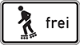

(1) Sport und Spiel auf der Fahrbahn, den Seitenstreifen und auf Radwegen sind nicht erlaubt. Satz 1 gilt nicht, soweit dies durch ein die zugelassene Sportart oder Spielart kennzeichnendes Zusatzzeichen angezeigt ist.
(2) Durch das Zusatzzeichen

wird das Inline-Skaten und Rollschuhfahren zugelassen. Das Zusatzzeichen kann auch allein angeordnet sein. Wer sich dort mit Inline-Skates oder Rollschuhen fortbewegt, hat sich mit äußerster Vorsicht und unter besonderer Rücksichtnahme auf den übrigen Verkehr am rechten Rand in Fahrtrichtung zu bewegen und Fahrzeugen das Überholen zu ermöglichen.